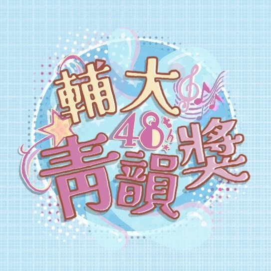

♪
FU JEN · 49TH
fjuchinyun_49
輔大青韻獎 第 49 屆
@
🎪
49屆青韻市集招募
攤位報名，一起加入市集
→
🎵
常見問題 Q&A
報名、資格、規則，一次看懂
→
📝
初賽報名表單
開放後即可線上報名
即將開放
📷
活動照片
精彩花絮，敬請期待
即將開放
📖
比賽簡章
賽制與規則詳情
即將開放
← 返回首頁
🎵 常見問題 Q&A
Q
報名資格是什麼？誰可以參加？
+
（範例答案，請改成實際內容）凡本校在學學生皆可報名參加，詳細資格請參閱簡章說明。
Q
可以幾個人一組報名？
+
（範例答案，請改成實際內容）個人組與團體組皆可報名，團體人數上限請以簡章公告為準。
Q
報名要準備哪些資料？
+
（範例答案，請改成實際內容）需填寫線上報名表並上傳指定資料，細節請見報名表單說明。
Q
報名截止後還能補件嗎？
+
（範例答案，請改成實際內容）如有相關規定將另行公告，建議於截止前完成所有報名程序。
FU JEN CHIN YUN AWARD · 49